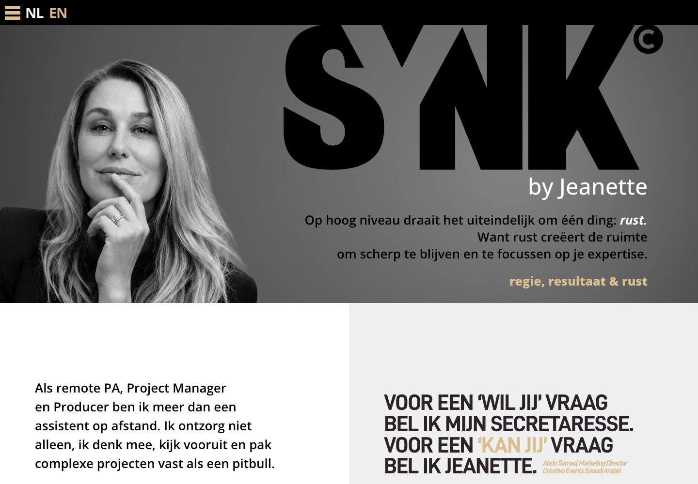
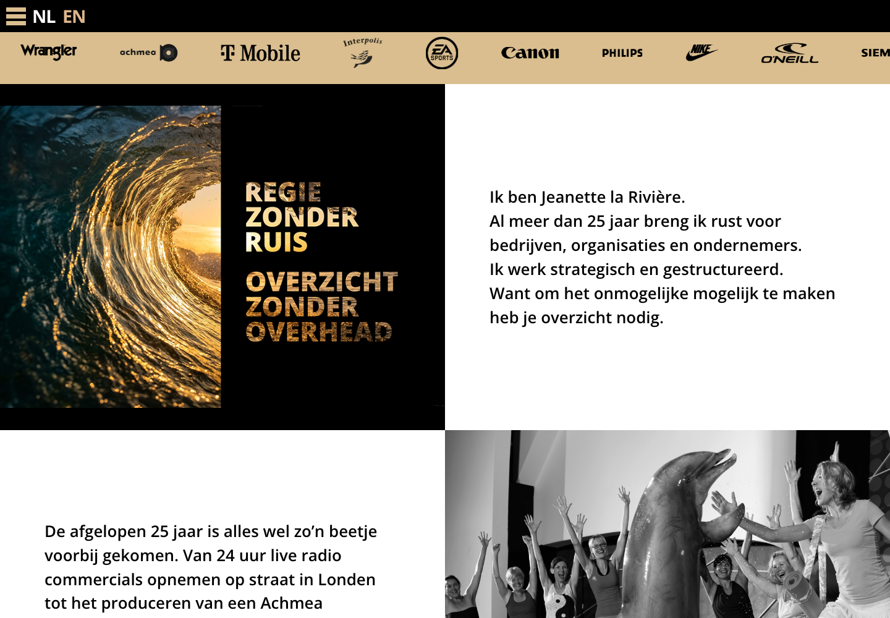
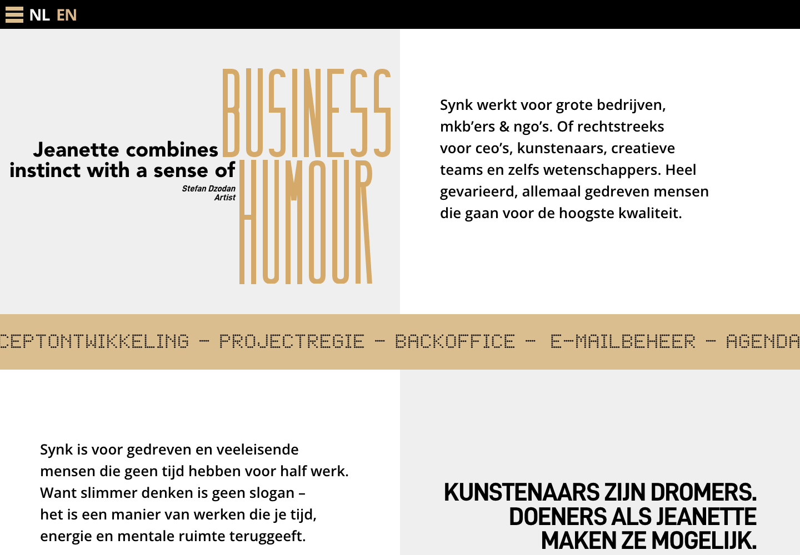

Case
Synk by Jeanette
Jeanette brengt regie, resultaat en rust in complexe projecten. Haar website laat ook de persoon achter dat werk zien. Ik verzorgde de webdevelopment: van het uitgesproken ontwerp tot een werkende website met beweging en inhoud in twee talen.



Vraag
Hoe laat je zien wie er achter de regie zit?
Synk by Jeanette ondersteunt ondernemers en organisaties als remote PA, projectmanager en producer. Daar hoort een persoonlijke presentatie bij: bezoekers willen weten wat Jeanette doet, hoe ze werkt en met wie ze gaan samenwerken.
Van ontwerp naar website
Het ontwerp combineert zwart-witfotografie, grote letters en warme goudtinten. Ik vertaalde die vormgeving naar de website en werkte de beweging en overgangen uit. Het portret vormt de opening; daarna wisselen persoonlijke uitleg, projectbeelden en uitgesproken typografie elkaar af.
Een verhaal in twee talen
Jeanette werkt ook internationaal. De website heeft daarom een Nederlandse en een Engelse versie, met een taalkeuze bovenaan. Naast het persoonlijke verhaal op de homepage zijn er aparte pagina’s voor de diensten en veelgestelde vragen. Telefoon, e-mail en LinkedIn geven bezoekers een directe route naar contact.
Uitkomst
Een website waarin Jeanette zelf zichtbaar is
De homepage brengt haar werk en persoonlijkheid samen. Het portret, de fotografie en de bewegende typografie geven ieder onderdeel een eigen karakter, binnen dezelfde zwart-witte basis met goudaccenten.
Webdevelopment: Joris Paardekooper. Design & art direction: Sjoerd Verbrugge. Strategie: Ward Cuiper. Concept & copy: Stefan Leendertse. Copy: JP Nieuwerkerk.
Herkenbaar?
Een website die past bij jou en je werk?
Ik kijk met je mee naar je verhaal, de uitstraling en wat je bezoekers nodig hebben om de volgende stap te zetten.